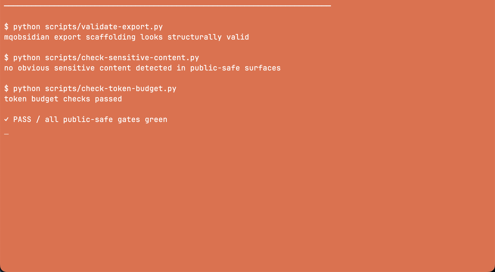
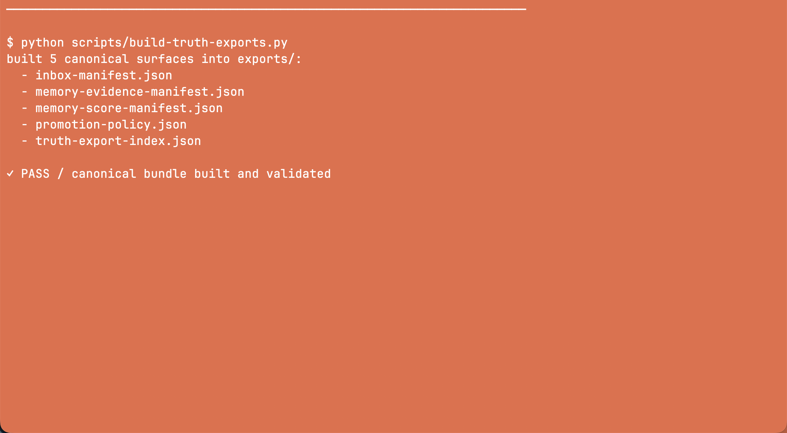

ENTRYPOINT
Truth export index
Enumerates every exported surface, schema version, location, freshness, and drift state.
Read contract →MQ STACK · KNOWLEDGE LAYER
mqobsidian stores reviewed, reusable knowledge and compact context surfaces. Live code and runtime state remain in the systems that own them.
READ ORDER
Agents expand context only when the smaller surface is insufficient.
Durable memory, schemas, templates, context packs, truth manifests, and public-safe export rules.
Execution, orchestration, current CLI behavior, active runtime state, or live review cognition.
VERSIONED CONTRACTS
ENTRYPOINT
Enumerates every exported surface, schema version, location, freshness, and drift state.
Read contract →CONTEXT
Compact agent-readable context with explicit inclusions, exclusions, and token budgets.
Read contract →EVIDENCE
Sanitized records feed review and ranking without becoming an automatic execution path.
Read contract →REAL OUTPUT
Captured from the repository's public-safe CLI checks.


DESIGN RULE
The value of mqobsidian is not more memory.Explore the repository
The value is better selection.